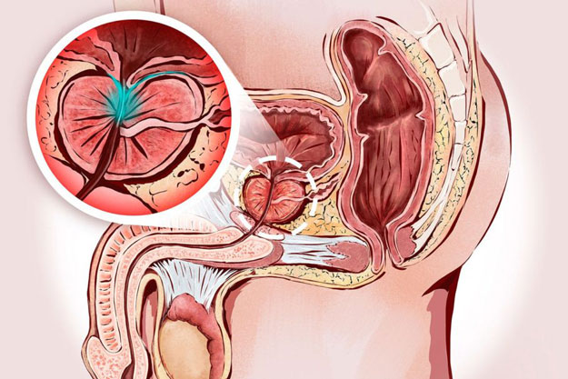

Cum să vindecați prostatita?
Un număr imens de scrisori vin în redacția noastră în fiecare zi, dar una dintre ele ne-a atras atenția deosebită. Credem că va fi util pentru jumătate de sex masculin al cititorilor revistei noastre.

Vreau să împărtășesc povestea mea și, poate, să ajut și alți bărbați care suferă de prostatită să devină din nou sănătoși. Din motive evidente, aș vrea să rămân incognito.
În primul rând, ce este prostatita? În cuvinte simple, este inflamația prostatei. Cea care produce secreția care permite spermatozoizilor să călătorească spre scopul lor și să nu moară în primele etape ale vieții lor deja scurte. De asemenea, prostata prostata este cea care blochează canalul urinar în timpul actului sexual, împiedicând sperma să intre în vezică și invers. Cauzele prostatitei sunt multe, dar principalele sunt stilul de viață sedentar și alcoolul.
Povestea mea a început cu mult înainte să știu ce este prostatita. Întotdeauna mi s-a părut că acest cuvânt este din lista bolilor pensionarilor și nu poate avea nimic de-a face cu mine. Aproximativ de la 15 ani periodic am început să am dureri. Durerea era ascuțită, avea un caracter foarte ciudat. În acel moment, nici măcar nu aș putea explica în ce zonă. Acest lucru se întâmpla foarte rar și nu i-am acordat importanță. Nu știi niciodată din cauza a ceea ce poate fi. Rareori și puteam o îndura 5-10 minute.
Au trecut 10 ani. În acest timp, aproape nimic nu m-a deranjat. Ei bine, această durere s-a manifestat o dată la 2-3 luni, uneori mai puțin frecvent. Și dintr-un anumit motiv, mi-a rămas în cap, că, probabil, toți bărbați au așa ceva. Este doar așa ceva despre care nu se vorbește. Cel mai dureros a fost atunci când s-a manifestat după sex. Nu este un moment bun pentru a te înghesui în durere într-o transpirație rece.

Și atunci când aveam 25 de ani, am avut o durere presantă în zona inghinală. O săptămână mai târziu, s-a intensificat atât de tare încât piciorul a început să amorțească din interior până la genunchi. Primul lucru care mi-a venit în cap a fost o hernie. În plus, am suferit patru intervenții chirurgicale la hernie, dintre care trei erau inghinale. Senzațiile erau foarte asemănătoare și am început să mă pregătesc moral pentru operație. Pe baza unei astfel de ipoteze, m-am programat la un chirurg care a pipăit zona inghinală, mi-a negat presupunerile și mi-a trimis la urolog.
Examinarea urologului a fost dureroasă. Medicul mi-a pus într-o poziție nu cea mai plăcută și mi-a băgat degetul (am simțit, că a fost întreaga mână) într-un loc inviolabil pentru orice bărbat. Și iată ce vă voi spune: dacă vi se spune să vă relaxați într-o astfel de situație, nici măcar nu puteți încerca. În această poziție, am petrecut aproximativ un minut. Desigur, este greu să te concentrezi într-o astfel de situație, dar încă trebuia să răspund la ce moment durerea se intensifică. Și s-a intensificat în momentul când apas pe prostată.
După terminarea procedurilor de diagnosticare, medicul a propus să urmeze biroul, eliberând în același timp niște glume despre hipotermie. Dar ar fi trebuit să mă așez la masa lui, ca un bun unchi transformat într-un procuror. Am ascultat cea mai rigidă și umilitoare prelegere că am o boală de bărbați de peste 45-50 de ani. A intervenit o pauză. Tăcerea a fost întreruptă, deja eu am întrebat "CE SĂ FAC?". Urologul a încetinit și a început să explice fără grabă cu ce am de-a face. Mi-a prescris supozitoare rectale, pastile și analize.
Tratamentul m-a ajutat. Apropo, la sfatul aceluiași medic, am început să joc sport (mi s-a spus, că previne stagnarea patologică în prostată). Și odată după piscină, am simțit o senzație cunoscută de arsură. M-am dus la un alt doctor. Din nou, aceeași poveste cu analize și aceleași recomandări. M-a ajutat pentru un timp, dar problema s-a întors din nou.

Am înțeles că urologii au o practică normală - să nu trateze boala, ci să amelioreze temporar simptomele. Prin urmare, am decis să acționez independent. Am cercetat întregul Internet, am citit o tonă de recenzii despre diferiți medici. Pe unul dintre forumuri am dat peste o postare despre profesor, care vindecă prostatita o dată pentru totdeauna. Păi, consultația lui costă sumele uriaşe de bani.
Dar ce să fac? M-am programat, am așteptat vizita o lună și jumătate. Profesorul a venit deja cu un teanc de analize gata făcute. Aproape fără să se uite la acestea, a scos un pachet de pastile din cutie, mi l-a înmânat și mi-a trimis la recepție să plătesc pentru consultația.
Medicamentul a fost numit . Am băut tot cursul așa cum mi s-a prescris. Efectul a fost impresionat: nu numai durerea și disconfortul general au dispărut. Ci și potența a crescut de multe ori, erecția a devenit mai calitativă și mai prelungită.

Cea mai bună parte: a trecut un an și jumătate, după cum am finalizat tratamentul cu și de atunci nu a existat o singură recidivă.
Recent am decis să beau pentru prevenirea prostatitei și pentru creșterea potenței. Am intrat pe internet pentru a afla dacă acest medicament este potrivit și pentru astfel de scopuri. După cum s-a dovedit, da, se potrivește.
Și am descoperit un alt punct interesant: costă de fapt, de câteva ori mai puțin decât am plătit pentru el la clinica profesorului. Medicamentul poate fi comandat direct de la producător fără marje. Și profesorul s-a dovedit un escroc. Deci, vreau să împărtășesc un link unde puteți comanda la prețul producătorului: